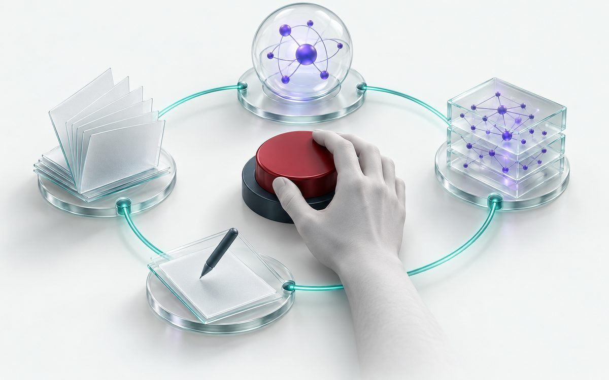

Human-centered AI · 2025–present
A research agent that keeps the researcher in charge
A semi-autonomous system that searches the literature, generates hypotheses, designs and builds ML pipelines, and writes up findings. It is built to work alongside researchers rather than replace them.